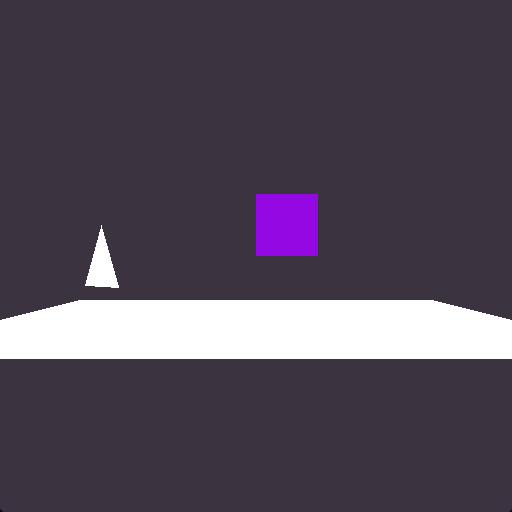
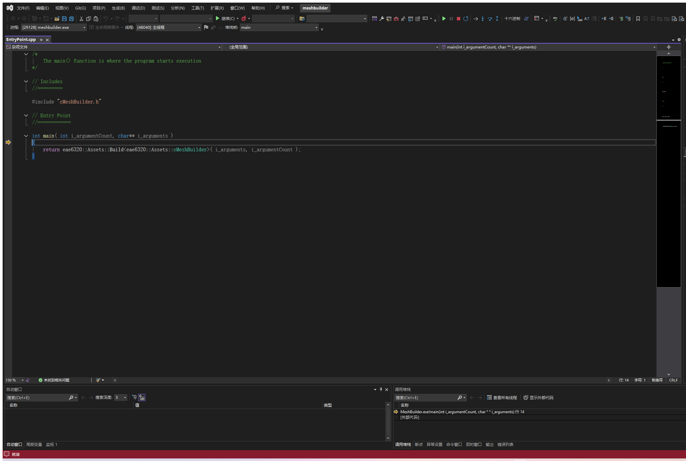
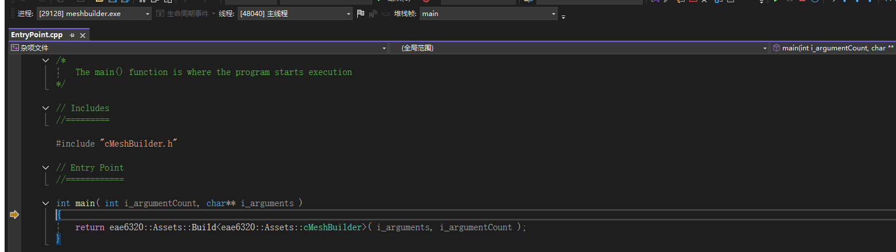
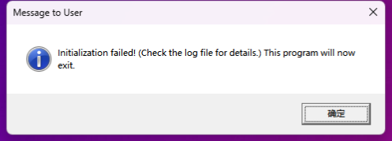

Assignment 06
A human-readable mesh file format, a MeshBuilder tool, and meshes loaded from disk instead of hard-coded
MyGame.exe. ESC closes the game. Arrow keys move the colored square, hold SPACE to give it the triangle mesh, hold SHIFT to draw it white. W/A/S/D move the camera and Q/E turn it.
Screenshots




Why human-readable asset files
Until this week the geometry of every mesh was a C++ array inside cMyGame.cpp. That is the worst place for content: changing one coordinate meant recompiling and relinking the game, nobody but a programmer could do it, and the data was tied to one game. Moving it into text files that the game reads at run time gives several things at once:
- Content and code are separate. An artist (or a tool such as the Maya exporter we will write next) can create and change meshes without touching the project, and the same mesh file works for any game built on the engine. The checklist tests above were done without recompiling anything: edit the file, build the assets, run.
- It is readable and diff-able. A mesh file can be opened in any text editor, reviewed in a merge request, and compared between versions with a normal text diff. A binary file would show up as an opaque blob.
- It is debuggable. When something looks wrong on screen the first question is "is it the data or the code?". With a readable file I can look at the vertex positions and the winding order directly, hand-edit a value to test a theory, or get an exact error ("triangle 1 refers to vertex 7, but the file only has vertices 0 to 3") from the loader, which prints the triangle number and the vertex number it found.
- It is maintainable. Adding a new attribute to vertices (the color that comes in Assignment 07) or a new kind of data to the file does not break older files, because values are looked up by name and unknown keys are ignored. A positional binary format would need a version number and converters.
- It is forgiving. Lua does the parsing, so whitespace, comments, number formats and trailing commas are all handled for free, and syntax errors come with a line number.
The price is that a Lua file is slower to load and bigger than a binary one, and the game currently links the whole Lua library just to read it. That is the right trade-off for the source format: when load time matters (a future assignment) MeshBuilder will convert these files to a binary format and the game will read that, while the human-readable file stays the thing that people edit.
A mesh file
This is MyGame_/Content/Meshes/square.mesh exactly as it is in the repository. The source files use the extension .mesh; the built files in data/Meshes/ keep the same name and extension for now, since MeshBuilder only copies them.
--[[
A unit square with its lower-left corner at the object's origin
(the same rectangle as Assignment 02, so that the reference image can be reproduced)
Mesh files are Lua tables:
* positions are in the object's local space (right-handed, +y up, +z toward the viewer)
* each vertex is a dictionary so that more data (color, normal, texture coordinates, ...)
can be added to it later without touching the existing values
* vertex indices start at 0 (the same number that the GPU uses in the index buffer)
* each triangle lists its three vertices counter-clockwise when looking at its front side
* the "-- n:" comments on the vertices are only there to help a human count;
nothing reads them, so adding or removing vertices never requires renumbering anything
]]
return
{
vertices =
{
{ position = { x = 0.0, y = 0.0, z = 0.0 } }, -- 0: lower left
{ position = { x = 1.0, y = 0.0, z = 0.0 } }, -- 1: lower right
{ position = { x = 1.0, y = 1.0, z = 0.0 } }, -- 2: upper right
{ position = { x = 0.0, y = 1.0, z = 0.0 } }, -- 3: upper left
},
triangles =
{
{ 0, 1, 2 }, -- lower-right half
{ 0, 2, 3 }, -- upper-left half
},
}triangle.mesh has three vertices and one triangle, and floor.mesh has nine vertices in three rows and eight triangles grouped by square, with a comment above each group.
Design choices
The guiding question for every piece of data was the one from class: would it be OK to change the order of this data? If yes it should be a dictionary with named keys, if no it must be an array. The resulting choices, including the ones I went back and forth on:
- Two named top-level tables,
verticesandtriangles. The top level is a dictionary because the two tables have different meanings and either could be listed first. Both are named after what they contain rather than how the GPU uses them (not "vertexBuffer" / "indices"), because the file is for people. - Vertices are an array. Their order is what the triangles refer to, so it is not interchangeable. Each vertex is a
{ position = { x, y, z } }dictionary rather than a bare{ 0, 1, 0 }. This was the decision I thought about the most. The bare array is shorter and the x-y-z order is one that every graphics programmer reads without thinking, which the assignment allows. I chose the named version for two reasons: the wordpositionis what makes the line understandable when the next assignment addscolor = { r, g, b, a }beside it (a vertex becomes a list of named attributes instead of a run of seven numbers), andx = 1.0can never be misread as a y. The cost is a longer line, which I accepted because the file is read far more often than it is typed, and it will normally be written by a tool anyway. - Triangles are an array of three-element arrays. The alternative was one flat
indices = { 0, 1, 2, 0, 2, 3 }list, which is exactly what the index buffer looks like. I rejected it because a human cannot see where one triangle ends and the next begins, especially in a long list, and because removing a triangle means counting out three numbers. With{ 0, 2, 3 }per line a triangle is one visible unit, one line can carry a comment, and deleting a triangle is deleting a line. The order inside a triangle matters (winding) and the order of triangles matters (it is the draw order), so both levels are arrays. The number of indices is three times the length of the outer table, so nothing has to be counted by hand. - Vertex numbers start at 0. Lua arrays start at 1, so a Lua purist would expect
{ 1, 2, 3 }for the first triangle. I chose 0 because it is the number the GPU uses, the number a debugger shows when you inspect the index buffer, and the number the loader prints in its error messages; keeping one numbering everywhere avoids the classic off-by-one when a human compares the file with what the renderer sees. The loader adds 1 when it talks to Lua (lua_rawgeti( L, -1, i + 1 )) and validates that every number is in range. The convention is stated in the header comment of every file. - No counts anywhere.
#verticesand#trianglesare computed by the loader. A stored count would be redundant data, and redundant data can disagree with the real data (delete a triangle, forget to change the count, and the loader either reads garbage or has to decide which one to trust). The checklist tests work precisely because nothing has to be kept in sync. - Helpful information lives in comments. The
-- 0: lower leftlabels make it easy to find the vertex a triangle refers to, and the floor file groups triangles by square with a comment. Lua ignores comments, so they can be wrong or missing without breaking anything, and the exporter can generate them for free. - Winding is counter-clockwise, as in the engine. The file follows the engine's right-handed convention; the Direct3D side still swaps the second and third index when it creates the index buffer, as it did in Assignment 05, so a file never has to know which platform will load it. (The assignment suggests moving that swap into the platform-independent load code; I left it where it was because the result is the same and the platform-specific file is already the only place that knows Direct3D is left-handed.)
MeshBuilder
MeshBuilder is a new console project in Tools/ (on disk and in Solution Explorer) with the same property sheets as ShaderBuilder and references to AssetBuildLibrary, Platform, Windows and Asserts. EntryPoint.cpp is ShaderBuilder's with "Shader" replaced by "Mesh", and cMeshBuilder only overrides iBuilder::Build():
eae6320::cResult eae6320::Assets::cMeshBuilder::Build( const std::vector<std::string>& i_arguments )
{
std::string errorMessage;
constexpr bool shouldFunctionFailIfTargetAlreadyExists = false;
constexpr bool shouldTargetFileTimeBeModified = true;
const auto result = Platform::CopyFile( m_path_source, m_path_target,
shouldFunctionFailIfTargetAlreadyExists, shouldTargetFileTimeBeModified, &errorMessage );
if ( !result )
{
OutputErrorMessageWithFileInfo( m_path_source, "Failed to copy the mesh to \"%s\": %s", m_path_target, errorMessage.c_str() );
}
return result;
}Platform::CopyFile() from the Platform project does the platform-independent copy; the two flags make it overwrite an existing built file and update the target's time stamp so the asset build system sees that the built file is newer than its source. On failure the error goes through OutputErrorMessageWithFileInfo() so that it appears in Visual Studio's Error List with the mesh path (double clicking it opens the file), and the failure result makes AssetBuildExe stop the build.
Two Lua files tell the build system about meshes. AssetBuildFunctions.lua registers the asset type; it only needs the builder's name, the default built path (same name and extension) and the default dependency check are fine for meshes:
NewAssetTypeInfo( "meshes",
{
GetBuilderRelativePath = function()
return "MeshBuilder.exe"
end,
}
)AssetsToBuild.lua lists the three files. A mesh needs no arguments, so each entry is just the path string:
meshes =
{
"Meshes/square.mesh",
"Meshes/triangle.mesh",
"Meshes/floor.mesh",
},The project that needs MeshBuilder to be built before it can build is BuildMyGameAssets, because its custom build step runs AssetBuildExe, which runs MeshBuilder.exe; so BuildMyGameAssets got a project dependency (not a reference) on MeshBuilder in the solution, next to its existing ones on ShaderBuilder and AssetBuildExe. Building the solution from an empty temp/ folder now prints "Built ...meshes/square.mesh" and so on, and the data/meshes/ folder appears in the install directory.
Loading a mesh
The factory function changed from taking arrays to taking a path:
// before (Assignment 05)
static cResult Load( const VertexFormats::sVertex_mesh* const i_vertexData, const uint16_t i_vertexCount,
const uint16_t* const i_indexData_counterClockwise, const unsigned int i_indexCount, cMesh*& o_mesh );
// now
static cResult Load( const char* const i_path, cMesh*& o_mesh );The game calls Graphics::cMesh::Load( "data/Meshes/square.mesh", m_mesh_rectangle ). Load() reads the file into two std::vectors, allocates the mesh, and passes vertices.data(), vertices.size(), indices.data() and indices.size() to the unchanged platform-specific Initialize(), so cMesh.d3d.cpp and cMesh.gl.cpp did not change at all. The vectors are freed when Load() returns; the GPU buffers are the only copy that survives. The Graphics project now references LuaLib.
The Lua part follows the ReadNestedTableValues example: one function per nesting level, each one finding the table it needs at the top of the stack and popping everything it pushed before returning, using a cScopeGuard so that early returns on errors still leave the stack balanced (the closing scope guard asserts that the stack is empty before lua_close()). The structure mirrors the file:
LoadMeshFile( path, vertices, indices ) // luaL_newstate, luaL_loadfile, lua_pcall, check that one table came back
LoadTableValues( ... )
LoadTableValues_vertices( ... ) // get "vertices", luaL_len, loop lua_rawgeti( -1, i )
LoadTableValues_vertex( ..., vertexNumber ) // get "position", then "x", "y", "z" as numbers
LoadTableValues_triangles( ... ) // get "triangles", luaL_len, resize indices to 3 * count
LoadTableValues_triangle( ..., n ) // rawgeti 1..3, lua_isinteger, range check, store as uint16_tOnly the two outer arrays are iterated, because their length is unknown; everything else is looked up by key or by a fixed index (a position always has x, y, z and a triangle always has three entries), so the non-deterministic order of dictionary keys never matters. Every check produces a specific error through Logging::OutputError() (and an assert in debug builds): a missing table, a non-number coordinate, a triangle with the wrong number of entries, a vertex number out of range, more than 65536 vertices. Those messages are what make a content problem distinguishable from a code problem.
Debugging MeshBuilder
MeshBuilder is run by the asset build system, not by hand, so to debug it Visual Studio has to be given the same command line. The arguments can be seen by uncommenting print( commandLine ) in BuildAsset() in AssetBuildFunctions.lua and rebuilding BuildMyGameAssets after deleting temp/: every ShaderBuilder.exe and MeshBuilder.exe command is then printed in the Output window. Everything after the exe path (the quoted source path and the quoted target path) goes into the MeshBuilder project's Debugging > Command Arguments; with MeshBuilder set as the startup project, F11 stops on the first line of main() in EntryPoint.cpp, which is the screenshot above. Stepping into Build<cMeshBuilder>() leads through ParseCommandArgumentsAndBuild(), which splits the arguments into m_path_source and m_path_target, to cMeshBuilder::Build(), where the two paths can be inspected before the copy happens. (Starting the exe with devenv /DebugExe and the same two arguments gives the same session.)
Notes
- All four configurations (Debug/Release, x64/x86) build from an empty temp/ folder with no errors and no warnings, and both platforms render the same picture.
- The floor is the optional challenge: a flat 8 x 8 plane in the xz plane, placed one unit below the origin with the white effect. Because it is a mesh file it cost no code beyond loading it and giving it a game object.
- ExampleGame builds no meshes, so its AssetsToBuild.lua is unchanged and it still runs.
- The .user file that holds the debugging arguments is not committed (it is in .gitignore), so the arguments in the screenshot section need to be re-entered on another machine.